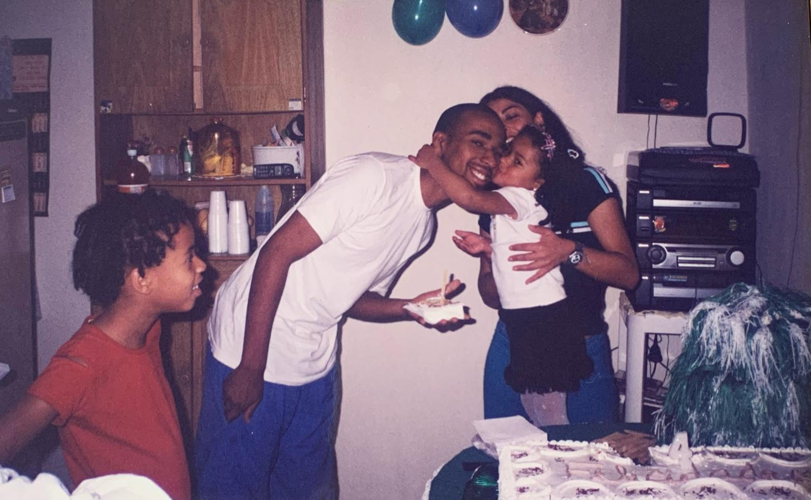
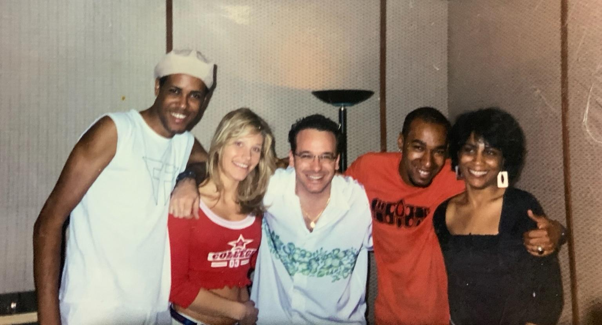
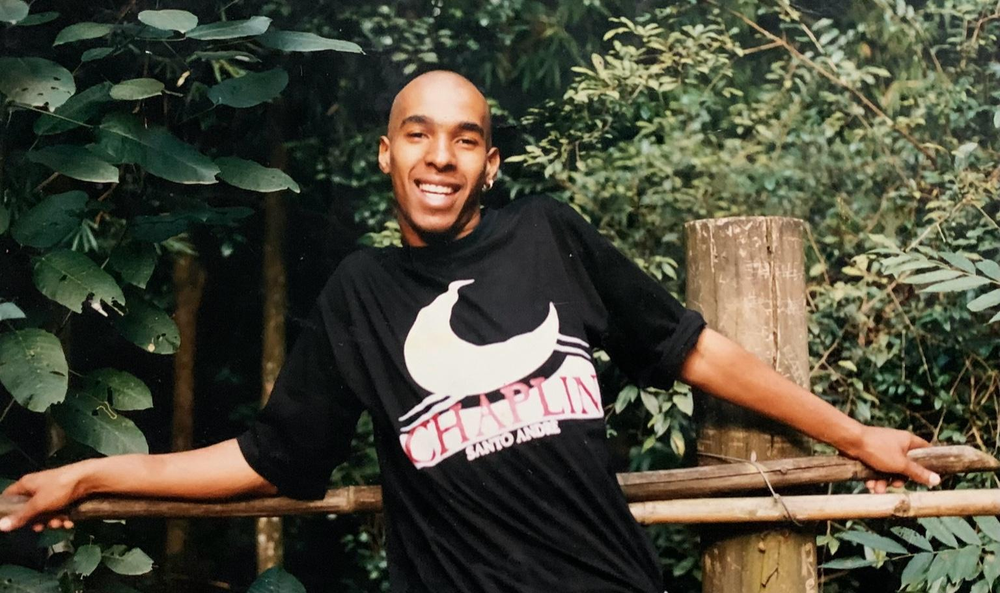

Laia Music
História
Composições
Playlists
Memorial
Making Of
Contato
Memorial
Momentos em família, estúdio e lembranças do Edney.
Ver slideshow
Ver em grade

Abraço em família no aniversário

Edney em estúdio com amigos

Edney sorrindo ao ar livre
×
❮
❯